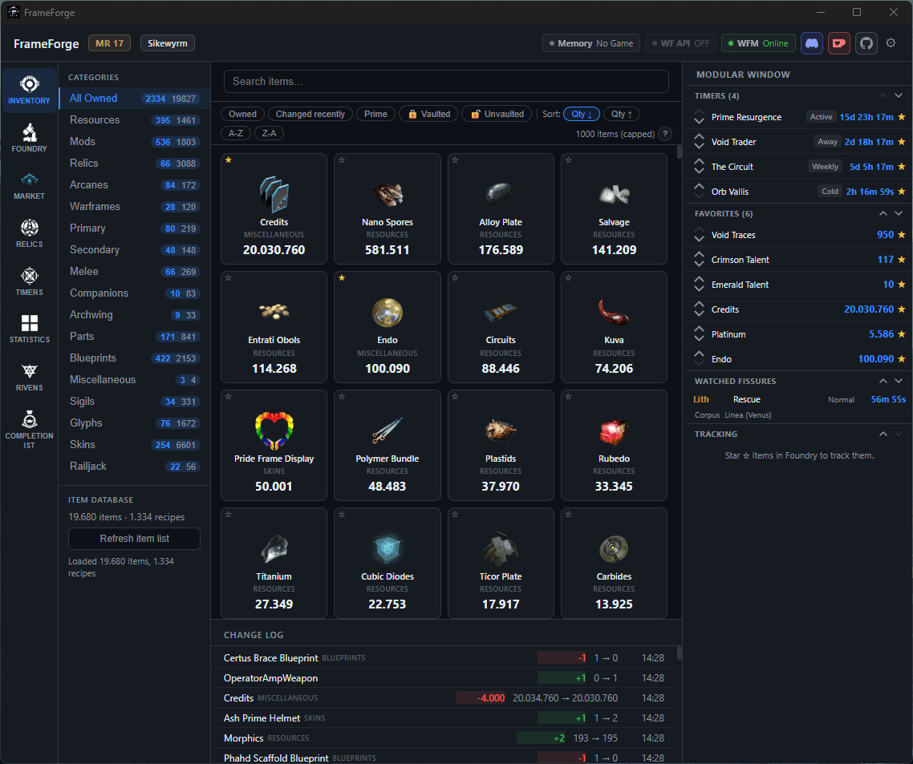
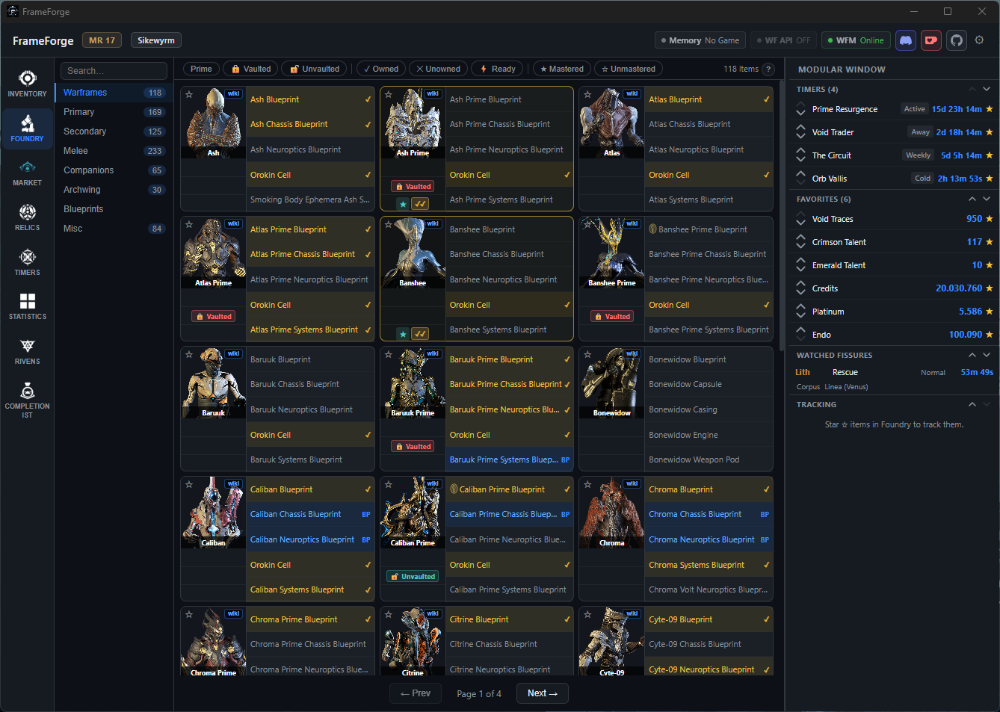
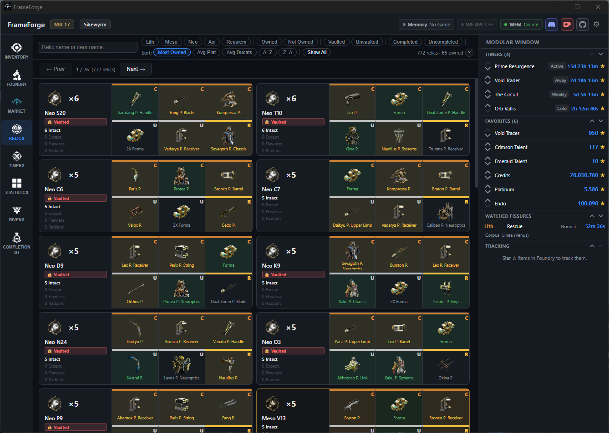
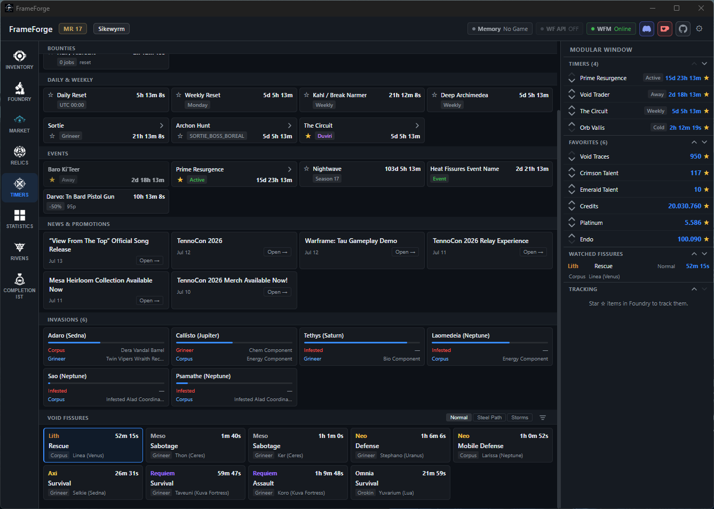
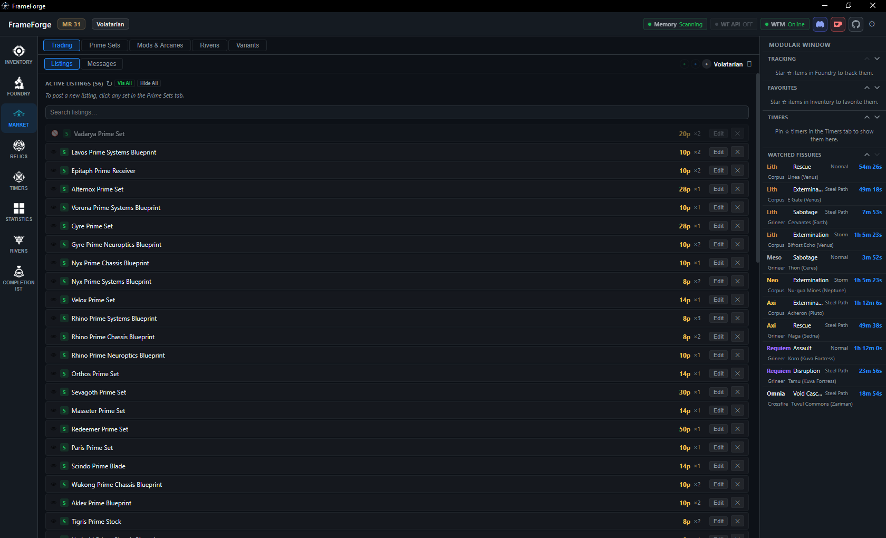
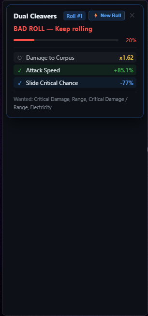

See It In Action
Real screenshots from FrameForge v2.5.










Live inventory tracking, market pricing, relic drop helper, Foundry browser, OCR reward overlay, riven analyser and more — all in one lightweight desktop app.
Windows 10/11 · No login required · Disclosure
Nine powerful tools in a single, lightweight app.
Your full Warframe inventory — resources, relics, mods, blueprints, rivens, crafting jobs, mastery data — updated every 10 seconds automatically while the game is running. No login. No API key.
Browse every craftable item in the game. See the full ingredient tree, how many of each component you own right now, and exactly what you still need to gather. Foundry timer integration included.
Live warframe.market platinum prices for every prime set and component. Filter by owned, dupes, or tradeable. Instant ducat valuation with smart dupe detection that respects recipe quantities.
Browse, search and filter all tradeable mods and arcanes. See live 48-hour median platinum prices, your current stock, and quick-jump to warframe.market listings.
Pick any prime part and see every relic that drops it, with Intact / Exceptional / Flawless / Radiant drop chances. Filter by vaulted status. Cross-reference your current relic stock instantly.
Live Warframe world state: void fissures by tier, Baro Ki'Teer (with stock when present), Archon Hunt, Void Storms, Sortie, world cycles and active events — all in real time.
Full warframe.market order-book browser. Search any tradeable item, see current buy/sell orders with price history, status, and reputation — without leaving the app.
Auto-detects the void fissure reward screen, captures it with Windows OCR, and overlays platinum prices and ducat values on each reward card — so you pick the best reward at a glance. In heavy development.
Scan your unveiled rivens directly from memory. Fuzzy-matched against your full riven inventory — displays disposition, rolls, and market context. In active development with ongoing improvements.
Real screenshots from FrameForge v2.5.






Read-only, privacy-first, and fully transparent.
FrameForge uses the standard Windows ReadProcessMemory API to read your own inventory data from the Warframe process. This is strictly read-only — the app never writes to game memory, never injects code, and never modifies game state. Disabled by default.
Platinum prices are fetched from warframe.market's public API. World state (fissures, timers, Baro) comes from DE's own public CDN endpoint. No login or API key required.
The reward overlay uses Windows' built-in OCR engine to read the reward screen from your local display. No screenshots are uploaded anywhere — processing happens entirely on your machine.
We contacted Digital Extremes directly about FrameForge's features before publishing widely. Their position: tools run at your own risk. They did not tell us to stop, did not call out any specific feature as prohibited, and have not taken action against any users. Read the full exchange on the Disclosure page.
Free. No account required. Windows 10 / 11 (x64).
Windows 10 / 11 (64-bit) · WebView2 runtime required (built into Windows 11)